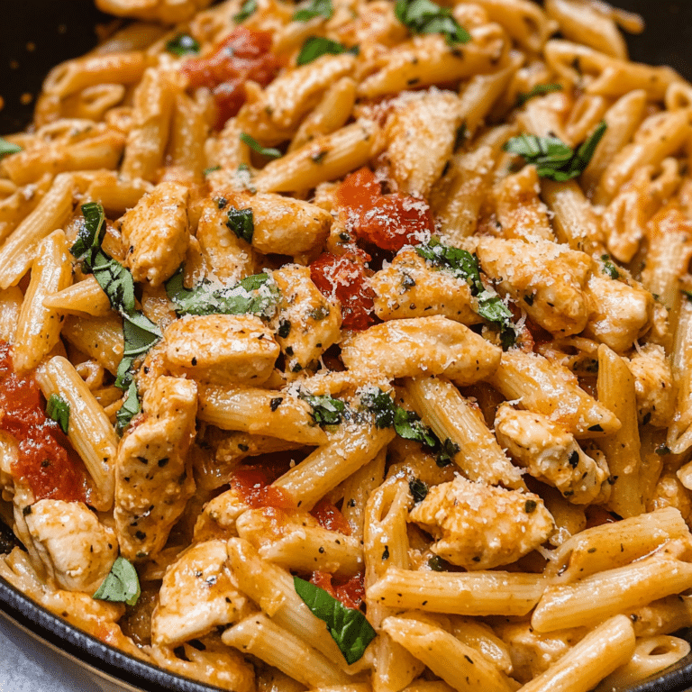

My Favorite Recipe
Marry Me Chicken Pasta
Ingredients
- 1 lb chicken breasts
- boneless and skinless
- Salt and Pepper
- Olive oil
- Minced Garlic
- Red Pepper Flakes>
- 1 Cup Heavy Whipping Cream
- 1/2 cup of chicken broth
- Grated Parmesan cheese
- 1/2 cup sun dried tomatoes
- 12 OZ Pasta of your chooice
Instructions
- Prepare the Chicken: Start by seasoning the chicken breasts on both sides with salt, pepper, garlic powder, and onion powder. You want the chicken to be well-flavored before it even hits the pan
- Sauté the garlic for 1-2 minutes, or until fragrant. Add red pepper flakes if you like a touch of spice. Next, pour in the chicken broth, scraping up any browned bits from the bottom of the skillet for extra flavor. Let the broth simmer for a minute or two.
- Gradually stir in the heavy cream and grated Parmesan cheese, whisking until the sauce thickens. Add the sun-dried tomatoes and continue to cook for another 2-3 minutes, allowing all the flavors to meld together.
- Return the cooked chicken breasts to the skillet, spooning the sauce over them. Let them simmer in the sauce for about 5 minutes, so the chicken absorbs all the flavors.
- While the chicken simmers, cook your pasta according to package instructions in a large pot of salted boiling water. Be sure to cook the pasta until it's just al dente, as it will absorb some of the sauce later. Drain the pasta and set it aside.
- Add the cooked pasta to the skillet with the chicken and sauce. Toss everything together, ensuring that the pasta is well-coated with the sauce.